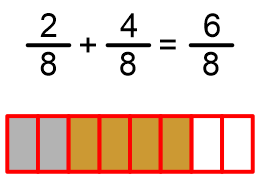
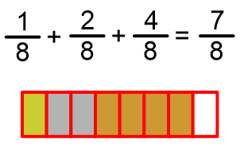
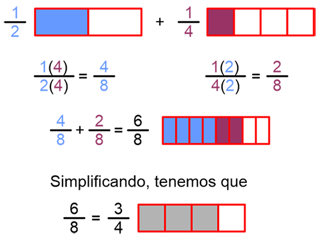

Los números fraccionarios, también llamados racionales, surgen por la necesidad de resolver problemas que
involucran la división de un todo en partes iguales, como repartir una pizza, dividir un terreno e incluso a
la hora de aplicar un impuesto. Se han usado desde antes de que se inventara el cero, e incluso antes que
los números negativos.
Un número racional es aquel que puede representarse por una relación o cociente de dos números enteros (a y
b), siempre y cuando el denominador sea distinto de cero.
Una fracción está constituida por dos expresiones, una debajo de la otra y separadas por una línea. En la
parte superior tenemos al numerador y en la inferior al denominador. El numerador habla del número de partes
que se toman de un entero y el denominador del número de partes en el que ha sido dividio un todo.
b debe ser 0 para que la
división no quede indefinida.
Los números enteros son parte de los , con b=1.
Cuando a=1, la fracción no puede reducirse como otra fracción, siendo la representación de una
parte igual a un todo. , un
medio; , un tercio; , un cuarto.
Existen dos tipos de fracciones, las propias y las impropias.
En las primeras el numerador es menor al denominador.
En las segundas el numerador es mayor o igual al denominador.
Fracciones Equivalentes
Son aquellas que representan una misma cantidad.
Suma de Fracciones I
Suma de fracciones con un mismo denominador
En este caso, basta sumar los numeradores y pasar el denominador como resultado.
Suma de dos fracciones

Suma de tres fracciones

Suma de Fracciones II
Suma de Fracciones con Distinto Denominador
En este caso hablamos de dos fracciones pertenecientes cada una a una unidad de distinto tamaño. Por ello es que debemos transformarlas a partes de las mismas dimensiones. Para conseguirlo, debemos multiplicar el denominador de la segunda por el numerador y denominador de la primera expresión. Posteriormente, multiplicaremos el denominador de la primera por el numerador y denominador de la segunda expresión.

Suma de Fracciones con Distinto Denominador
En este caso hablamos de dos fracciones pertenecientes cada una a una unidad de distinto tamaño. Por ello es que debemos transformarlas a partes de las mismas dimensiones. Para conseguirlo, debemos multiplicar el denominador de la segunda por el numerador y denominador de la primera expresión. Posteriormente, multiplicaremos el denominador de la primera por el numerador y denominador de la segunda expresión.
Resta de Fracciones con Distinto Denominador
El procedimiento es el mismo que el de la suma para la conversión de fracciones a una misma unidad. Una vez habiéndola hecho, se habrán de restar las fracciones.
Valor Absoluto
Es el número que representa a una cantidad sin importar su signo o dirección. Se representa por la cantidad
encerrada entre barras. Así el valor absoluto de -4 es 4. Siendo lo mismo |-4|=4. También se puede describir
como la distancia que hay entre el cero y el punto que representa a la cantidad sobre la recta numérica.
Relación de Orden
Es la jerarquía que se guarda entre operaciones distintas.
se resuelven primero las raíces y potencias
en segundo lugar, multiplicaciones y divisiones
En tercer lugar, sumas y restas
Siempre de izquierda a derecha
Descomposición de números en factores primos
Un número primo sólo es diisible entre sí mismo y la unidad.
(Matemáticas Simplificadas. pág. 36)
Para obtener los primeros n números primos de los números naturales se puede utilizar la criba de
Eratóstenes, la cual consiste en hacer una tabla con los números del 1 hasta n.
Mínimo Común Múltiplo (mcm)
Es el menor de todos los múltiplos comunes de dos números naturales o más.
Para ejemplificarlo, tomaremos los múltiplos de 3, 5 y 6.

 0 para que la
división no quede indefinida.
0 para que la
división no quede indefinida.  , con b=1.
, con b=1. , un
medio;
, un
medio;  , un tercio;
, un tercio;  , un cuarto.
, un cuarto.